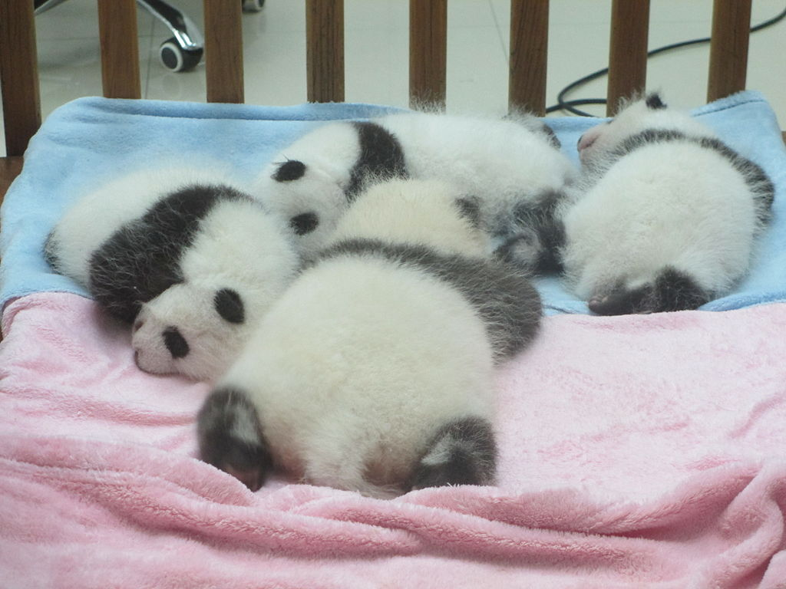

Giant Panda
Test rubrik
| Name | Gren | |
|---|---|---|
| Hasse | Dart |
Pandan blir mellan 1,5 och 1,7 meter lång och väger som fullvuxen mellan 70 och 150 kilogram. Mankhöjden ligger vid 75 centimeter och hanen blir 10 till 20 procent större än honan.
Djurets päls är vit med svarta områden. Pandan har svarta ben och armar och svarta ringar runt ögonen samt svarta öron.
Även svansspetsen är ibland svart. Svansen är med en längd av 10 till 15 ntimeter den näst längsta hos någon art i familjen björnar; endast för läppbjörnen finns rapporter om individer med längre svans.[3] Pälsen är väldigt tjock. Pandans färger smälter bra in i mosaiken av ljus och skugga i den naturliga miljön av bambusnår och lövtäckta grenar som arten lever i. Anledningen till pälsfärgen är dock inte helt utredd.

Panda cubs
Diet
Pandas eating bamboo. Panda eating, standing, playing Despite its taxonomic classification as a carnivoran, the giant panda's diet is primarily herbivorous, consisting almost exclusively of bamboo.[45] However, the giant panda still has the digestive system of a carnivore, as well as carnivore-specific genes,[49] and thus derives little energy and little protein from consumption of bamboo. Its ability to digest cellulose is ascribed to the microbes in its gut.